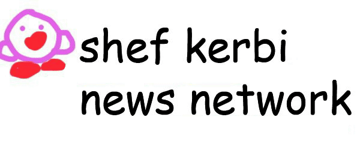
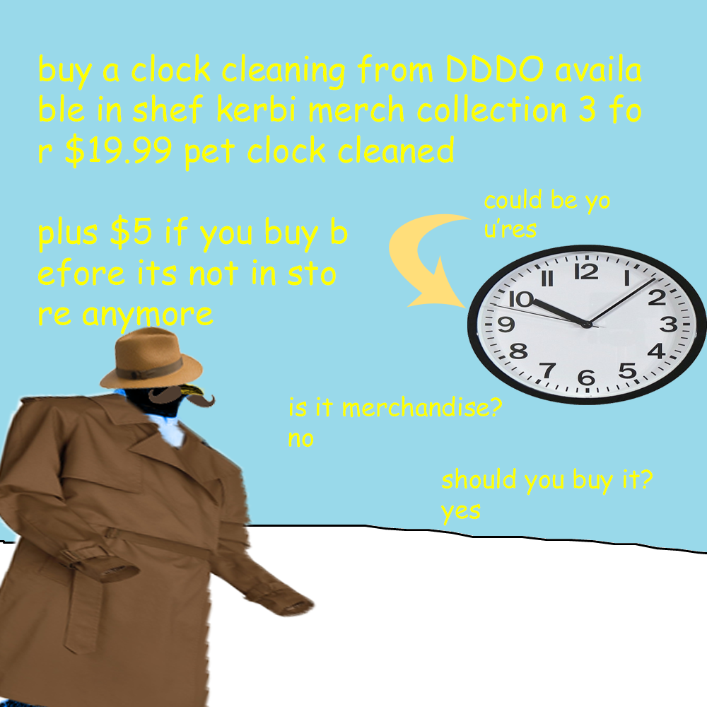
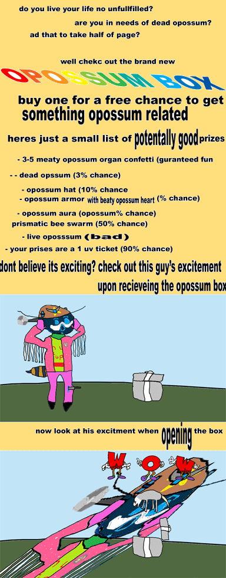
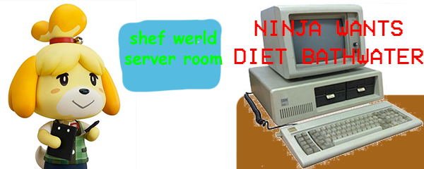

"Now with 5x1042% more dark magic!"
$5.00 | ~8 ghost dollars | ⭐25 coins
Does not include potential cost from surprise mechanics, purchases from Shef Kerbi's Apparel or preordering the Special Edition
BREAKING NEWS FUNNY MOMENTS ANIMATED
by CrazeePi's Disembodied Voice
A recent breakthrough in newspapers allows us to make newspaper that defy all laws of reality and animate themself. When asked how he managed to create such technology, Shef Kerbi responded

The secrets on how he does this may forever be hidden by the fact that his words are scrolling too fast for us to read them.
-------------------------
SHEF KERBI'S APPAREL
by shef kerbi

Today, we are announcing the release of Collection 3 of Shef Kerbi's Apparel! We've kept the game controllers from Collection 2 and the Shef Kerbi hat from Collection 1, but the rest of the store is filled with new items, such as the Candy Sadness shirts and our brand new Animated Shirt, defying all laws of reality once again to craft a full motion animation on fabric (or the 3D printer material).
Click here to start shopping!
I won't be surprised if the diet bathwater sells out in 3 days
-----------------------
NEWS NOBODY ASKED FOR NEWS
by Apple the Cat
Mysterious vandalism of Apple the Cat (the very handsome sknn employee)'s house has been happening for the past few days. Although there is not much information available on them, bear traps have not reduced the frequency or amount of vandalism, so the perpetrator is definitely not a bear. More on this story in the next bulletin.

SCIENCE AND TECHNOLOGY NEWS
by Apple the Cat
Apple the Cat has just discovered that you can purchase zero and negative amounts of items from Shef Kerbi's Apparel. According to one scientist, purchasing zero of an item will just get you an empty box that you have to pay shipping for, but researchers are currently waiting for the same second shipping to OH MY :smile: IS THAT A BLACK HOLE
SMASHING ARTICLE OF NEWS:
by Apple the Cat
Although Smash Bros. Ultimate's inclusion of every character ever in the Smash Bros. Franchise pleases most people, many fans are angry at the absence of iconic Nintendo characters. Employees of SKNN have compiled this list of the characters that fans are begging for most.
SMASH CHARACTERS WE WANT IN SMASH (whoops)
-Cinnamon-Waluigi
-PETE
-Geno
-Dark Gary
-Rusty
-Another random character from Fire Emblem
-Trophies
-Goku
-Shef Kerbi
-More clone characters
-Bulbasaur with a Baseball Bat
-Mizzo
I am The entire Flash department of SKNN (and not the Scratch one) is working on a game to include these characters, so ask Santa for that, I guess. It will be available on computers and the SouljaGame Handheld.

THIS IS ACTUALLY RIDICULOUS
by Apple the Cat and Shef Kerbi
you can't strikethrough a heading on text based gchat forums what
yet you can on the website
website > tbg

Now I don't wanna give my own opionion but...
OPIONION WITH SHEF KERBI AND BON STARBUCKLE
Another article? Already? - @everyone
So we told you Shef Kerbi News Network fans on our Scratch page that you could post anything with the #SKNN hashtag and you could end up in our paper! In this episode, we'll respond to some of your feedback with the new SKNN format, as well as show some of your cool stuff!
We began this issue's section with
"diet bathwater"
and here were your responses:
epicbros64 wrote:
"dude! you got more than 200 followers on scratch!!"
okay
And? I don't want this to just look like a weird flex. Then again, I'm verified.
TailsFanV51 wrote:
"https://scratch.mit.edu/projects/321246595/ springer but every clone has a WHIP CRACK"
WHIP CRACK
okay but seriously though I'm so proud that Springer has such a great audience. Time to claim your video and take all your ad revenue from it!
dude, i was joking. it's fine. i would never do that. maybe
jon wrote:
"So I heard that embedding animation into newspapers and clothing is now possible. What's next for this new breakthrough?"
We're currently experimenting with putting animation onto cars, trees, fridge magnets etc.
We're also trying to get full motion video to work (video and audio), however we're having an issue with not being able to do that on Text Based Gchat, yet we're able to do it on the website. However, we can test to see if the video rendering capabilities work live. Right now.
ERROR: Cannot request dependency 'VideoRenderEngine' to website http://tbgforums.com/forums/viewtopic.php?id=5107: Access Forbidden
Hopefully that answers your question
RealAnimeCatGirl wrote:
"Please don't raid Area 51"
We won't be. We're already researching how to make our own Anime Cat Girls. *insert laugh here*
Ask Bon And Bon's Cat
Dear Bon's Cat
How many languages can you speak
I'm a cat
If you would like to submit your own opionion for Shef Kerbi or a question to Bon Starbuckle, just go to our social media, on Twitter, Instagram or Scratch.
But prefably Scratch because that's what everyone uses
----------------
COMIX
by Apple the Cat and Keysun DDDO
Apple the Cat - Candy Sadness

Keysun DDDO - Keynsun DDDO goes to Peach's Castle

ACTIVITES
by Apple
The activity today is to unscramble "TOADSWORTH IS CORRUPT". Answer in the next bulletin. Have fun.
weather
by Zeke Teddy
So uh it's max 12 and min 3 today, but it's super windy and it's going to feel freezing so that's fun
Tomorrow is max 10 and min 0 yeah that's pretty cold universe can you warm up a bit plz ok thanks
THANK YOU FOR WATCH. PLEASE TUN E IN NEXT TIME FOR MORE NESW

Shef Kerbi News Network follows the guidelines and conventions set by the 1984 High Quality News Act of Dreem Lend, which states
that any news published is to be of a high quality, is to remain unbiased and to show all sides of a news report, does not attack anyone, and protects the privacy
of people whose identities don't want to be revealed.
If you would like to file a complaint regarding content use, please message SKNN through our Scratch account. We also have a Twitter and Instagram account if you
prefer.
Shef Kerbi News Network respects the ancestors of Cappy Town, and understands that they are the reason why Dreem Lend exists.
Shef Kerbi News Network is proud to be a subsidiary of Shef Werld

this website is best viewed with Ned's Escape